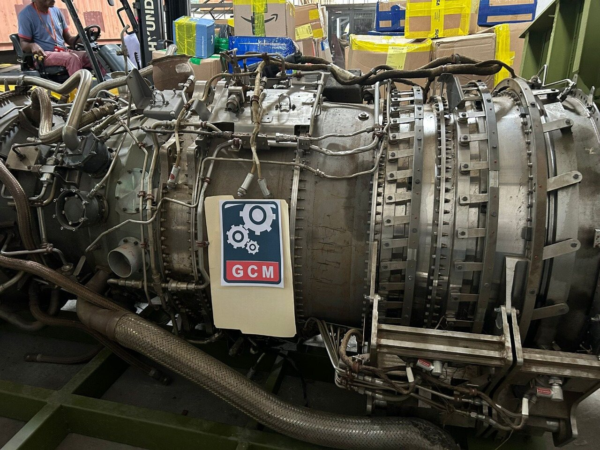
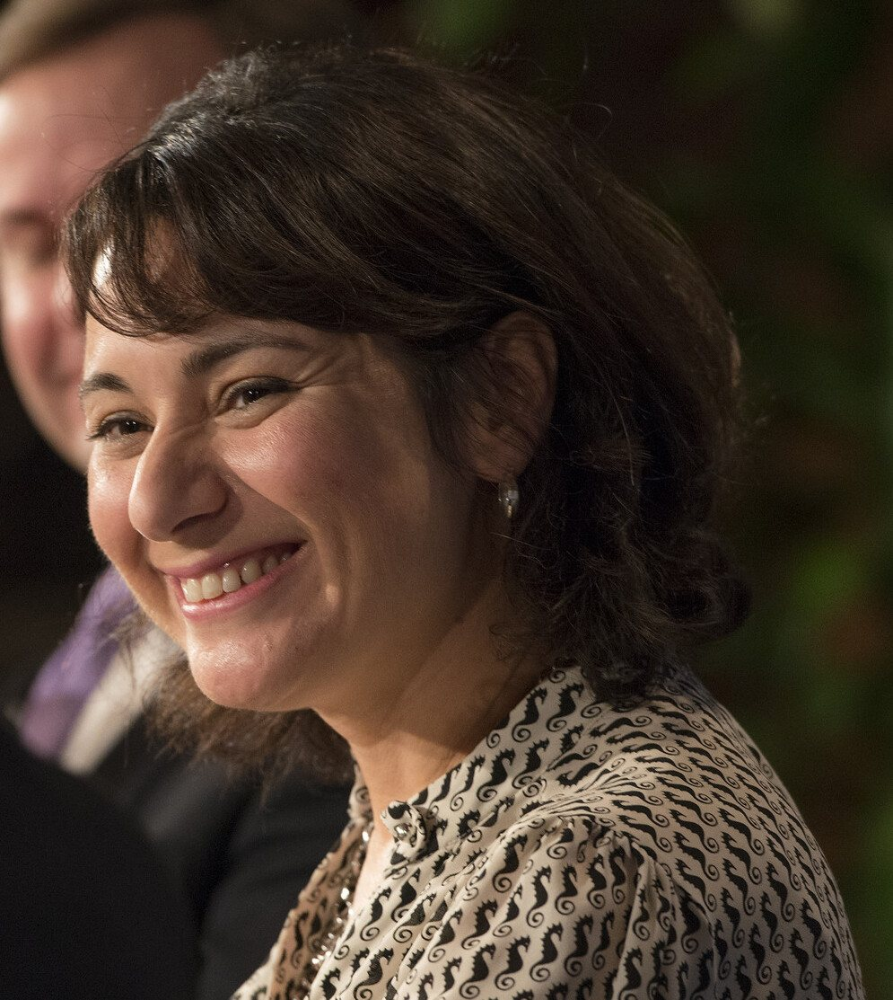

Il progetto più terrestre di SpaceX ha superato il suo primo vero esame. La Texas Commission on Environmental Quality, la TCEQ, l’agenzia che in Texas autorizza tutto ciò che emette fumi e scarichi, ha rilasciato lunedì 16 novembre il permesso per l’aria della centrale a gas destinata al centro di supercalcolo di Starbase. La portavoce dell’agenzia, Laura Lopez, ha confermato la data. La notizia è diventata pubblica la sera del 17 novembre, ora italiana, grazie a una copia del documento ottenuta dall’associazione ambientalista FracTracker Alliance con una richiesta di accesso agli atti. È lo stesso sito che SpaceX aveva presentato il 12 novembre insieme al campus dell’Arizona, con un conto complessivo di oltre 74 miliardi di dollari.
Che cosa è stato autorizzato
Il terreno è di 444 acri, circa 180 ettari, fra Boca Chica Boulevard e il porto di Brownsville, a pochi chilometri dalle torri di lancio. Lì SpaceX vuole costruire, possedere e gestire una centrale a gas e un impianto di supercalcolo: sono le parole dell’avviso pubblico della città di Starbase, che stima le sole fasi iniziali in 24 miliardi di dollari. La centrale non sarà collegata alla rete elettrica del Texas. Produrrà energia soltanto per i calcolatori, quelli con cui SpaceX vuole moltiplicare la propria potenza di calcolo per l’intelligenza artificiale nel giro di un anno.
La domanda era stata depositata l’8 settembre da una società di consulenza, Trinity Consultants, a nome di SpaceX, per un «Boca Chica Facility», con il codice di attività dedicato all’elaborazione di dati. Il percorso scelto è il permesso standard texano per gli impianti di generazione elettrica: un’autorizzazione già scritta a cui l’impianto si iscrive, invece di un permesso costruito su misura. La configurazione iniziale descritta nei documenti comprende 35 turbine definite provvisorie, per circa 748 megawatt: otto GE Vernova TM2500, nove Mitsubishi FT8 e diciotto Solar SMT-130. Sono macchine usate o ricondizionate, e SpaceX precisa di non averne comprata nessuna direttamente dal costruttore. In una seconda fase le prime unità lascerebbero il posto a otto turbine GE Vernova 7E, per circa 708 megawatt.

1,14 tonnellate sotto la soglia
Il numero che conta di più non è quello dei megawatt. Il permesso fissa un tetto di circa 248 tonnellate l’anno di ossidi di azoto, gli inquinanti che contribuiscono a formare l’ozono; nella domanda il valore era di 248,86 tonnellate. La soglia federale oltre la quale un impianto nuovo diventa una «fonte principale» è di 250 tonnellate: sopra quel limite scatta la revisione preventiva prevista dal Clean Air Act, con modelli della qualità dell’aria e i controlli più severi. SpaceX resta sotto di 1,14 tonnellate. Le particelle sottili hanno un tetto di 242,11 tonnellate.
Il margine così stretto ha una conseguenza pratica. Le emissioni delle fasi di accensione e spegnimento non entrano nel conto, con un massimo di 50 eventi l’anno per turbina, ma un giornalista locale, Joshua Moroles di The 956 Report, ha calcolato che tutte le 35 turbine a piena potenza per un anno intero arriverebbero a circa 458 tonnellate, quasi il doppio del tetto. È una stima sua, non della TCEQ, ma spiega perché la domanda preveda che, se gli ossidi di azoto superano i valori dichiarati, il fattore di utilizzo massimo dell’impianto venga ridotto in proporzione. In altre parole il tetto limita le ore di funzionamento quanto le macchine installate.
La pausa di Abbott e la ripartenza
Il permesso arriva in un momento politico molto preciso. Ad agosto il governatore repubblicano Greg Abbott aveva chiesto a ERCOT, il gestore della rete elettrica texana, e ai regolatori dell’energia di passare al setaccio tutti i data center in attesa di allacciamento: consumi di energia e di acqua, agevolazioni fiscali, effetti sui quartieri vicini. Il 21 settembre aveva scritto alla TCEQ di sospendere le autorizzazioni ambientali legate ai data center finché ERCOT non avesse «completato la sua revisione». A ottobre Public Citizen e FracTracker avevano scoperto che alcuni permessi per cantieri di data center venivano rilasciati comunque; l’agenzia li aveva sospesi e aveva spento il suo intero sistema di domande elettroniche, chiedendo pratiche su carta esaminate a mano.
Venerdì 13 novembre l’ufficio del governatore ha comunicato alla TCEQ che ERCOT aveva finito di raccogliere le informazioni sull’impatto dei data center sulle comunità. «The agency has resumed its normal permit review process», l’agenzia ha ripreso il suo normale processo di esame e valuterà le domande nel rispetto di tutte le leggi statali e federali applicabili, ha scritto Lopez. Lunedì è arrivato il permesso per Starbase. ERCOT però ha fatto sapere che la sua verifica non è ancora conclusa: al 5 novembre aveva ricevuto risposte dal 93% dei 465 progetti censiti, e presenterà i risultati completi alla Public Utility Commission del Texas il 10 dicembre, per discuterli nella riunione pubblica del 17 dicembre.

La denuncia: «gru al lavoro sulle turbine»
Tre giorni prima del rilascio, FracTracker Alliance e Public Citizen avevano presentato alla TCEQ una denuncia contro SpaceX. L’accusa è di aver avviato i lavori di costruzione senza autorizzazione, in violazione del Clean Air Act: a sostegno, immagini satellitari e aeree che mostrerebbero gru al lavoro sulle turbine del sito fra il 9 ottobre e il 12 novembre. La TCEQ non ha risposto alle domande sulla denuncia, SpaceX non ha risposto alle richieste di commento. Le due associazioni hanno reagito alla ripresa dei permessi chiedendo le dimissioni dei commissari dell’agenzia. Kathryn Guerra, responsabile della campagna di vigilanza sulla TCEQ di Public Citizen, accusa l’agenzia di sostenere che ERCOT abbia concluso la sua valutazione senza condividerne i risultati con le comunità e senza spiegare come li userà, e di aver ricominciato «unilaterally», di propria iniziativa, a rilasciare permessi. «Texans are tired of this political theatre», i texani sono stanchi di questo teatrino politico, ha aggiunto Sam Law di FracTracker, che chiede una vera moratoria.
Sullo sfondo c’è un passaggio di potere. Il 3 novembre Abbott ha perso la rielezione contro la democratica Gina Hinojosa, che in campagna elettorale aveva promesso di tenere ferme le approvazioni dei data center finché il parlamento statale non avrà approvato nuove leggi. Si insedierà a gennaio. Il permesso rilasciato lunedì è valido per dieci anni: il calendario, per SpaceX, non poteva essere più favorevole. Né l’ufficio di Abbott né lo staff di Hinojosa hanno commentato.
Acqua, tasse e il voto del 9 dicembre
Il terreno del supercalcolo ha una storia amministrativa a sé. Ad agosto Brownsville lo ha escluso dai propri confini comunali, dopo che SpaceX aveva offerto 220 milioni di dollari per acquedotto e fognature della città e della contea di Cameron; poi lo ha annesso la città di Starbase, il comune nato attorno alla base. Proprio martedì 17 novembre SpaceX ha annunciato su X un nuovo versamento di 30 milioni al Brownsville Public Utilities Board, l’ente dei servizi idrici: il totale già pagato sale a 70 milioni dei 220 promessi. Il 12 novembre l’azienda aveva mostrato le immagini della bonifica del sito, con pneumatici, rottami e vecchi serbatoi abbandonati dagli anni Sessanta.
Il prossimo passaggio è fiscale. Il 9 dicembre la commissione di Starbase esaminerà la richiesta di riduzione delle imposte sugli immobili per il progetto, lo stesso giorno in cui in Arizona si discute il campus da 50 miliardi della contea di Cochise. Per una società ormai quotata in Borsa, che punta sempre di più sul supercalcolo accanto a Starlink, avere già in mano il permesso per l’aria significa aver chiuso un passaggio decisivo prima del cambio di governo ad Austin.
Che cosa resta aperto
Le domande sono almeno quattro. La prima riguarda la configurazione: i documenti consultati non chiariscono se il permesso copra le 35 turbine provvisorie o le otto GE Vernova 7E, e un sito locale aveva riportato a metà novembre una lettera di autorizzazione datata 17 settembre, che la TCEQ non ha commentato. La seconda è la denuncia per i lavori anticipati, ancora senza risposta. La terza è il rapporto di ERCOT del 10 dicembre, che potrebbe riaprire il confronto politico sui data center in tutto lo Stato. La quarta è la nuova governatrice: una moratoria non cancellerebbe un permesso già rilasciato, ma potrebbe pesare sulle autorizzazioni ancora da chiedere per le fasi successive.
Intanto a Starbase convivono due cantieri molto diversi. Sopra il terreno bonificato dovrebbero sorgere sale piene di calcolatori alimentate da turbine in parte derivate da motori d’aereo; a pochi chilometri, la torre che sabato 14 novembre ha ripreso al volo la prima Starship. La breaking di ieri su Starlink e il blocco dei voli della FAA passa all’archivio ed è disponibile nel dossier dedicato; i piani di SpaceX per il supercalcolo in Arizona e a Starbase sono raccontati nel dossier del 13 novembre.
Fonti pubbliche e tracce
Ultimo aggiornamento editoriale: 18 novembre 2026 alle 9:18 (ora italiana). Nel corpo non si ripete la fonte a ogni frase: le tracce sono raccolte qui. Le date sono quelle locali del Texas salvo dove indicato.
- Politico, 17 novembre 2026: permesso rilasciato lunedì 16 novembre e confermato dalla portavoce TCEQ Laura Lopez, 35 turbine a gas e 750 MW su 444 acri, copia ottenuta da FracTracker Alliance, progetto da 24 miliardi, denuncia per lavori senza permesso, nessuna risposta di SpaceX, ERCOT con verifica ancora in corso.
- The Texas Tribune, 17 novembre 2026: ripresa dei permessi dopo la comunicazione dell’ufficio di Abbott del 13 novembre, dichiarazione di Laura Lopez, lettera del 21 settembre, sospensione del sistema elettronico a ottobre, dichiarazioni di Kathryn Guerra (Public Citizen) e Sam Law (FracTracker), elezione di Gina Hinojosa, dati ERCOT del 5 novembre e calendario del 10 e 17 dicembre.
- Data Center Digest: avviso pubblico della città di Starbase, permesso standard per gli impianti di generazione elettrica, soglia di 250 tonnellate e revisione federale, tetti di 248,86 tonnellate (ossidi di azoto) e 242,11 tonnellate (particolato), riduzione del fattore di utilizzo.
- Gateway to Mars, Starbase Watch, 3 novembre 2026 con aggiornamento del 14 novembre: domanda dell’8 settembre, modelli e numero delle turbine, unità usate o ricondizionate, codice di attività, lettera TCEQ datata 17 settembre.
- TECS Engineering, 18 novembre 2026: riepilogo delle fonti, calcolo di The 956 Report sulle 458 tonnellate, 50 accensioni e spegnimenti per turbina, esclusione del terreno da Brownsville e annessione a Starbase, voto del 9 dicembre.
- Politico, 10 novembre 2026: richiesta di agevolazioni fiscali e domanda per le 35 turbine mobili ottenuta da Joshua Moroles.
- AI Stock Wire, novembre 2026: dati del registro dei permessi TCEQ, scadenza al 16 novembre 2036, insediamento di Hinojosa il 19 gennaio.
- SpaceX su X, 17 novembre 2026: altri 30 milioni al Brownsville Public Utilities Board, 70 milioni versati sui 220 promessi.
- SpaceX su X, 12 novembre 2026: bonifica del sito di supercalcolo di Starbase, fotografia usata in copertina.
Fotografie utilizzabili
La copertina è una fotografia SpaceX del sito di Starbase interessato dal permesso, pubblicata su X e usata con credito SpaceX · uso editoriale non commerciale: non esistono immagini libere del sito. La turbina FT8 (CC BY-SA 4.0) e il ritratto di Gina Hinojosa (pubblico dominio) sono immagini d’archivio da Wikimedia Commons, scelte per mostrare il tipo di macchina autorizzata e la futura governatrice. Dettagli in scheda dei crediti fotografici.
Apri il dossier su Starlink e il blocco dei voli FAA, archiviato · Archivio Notizie · Torna a SpaceX